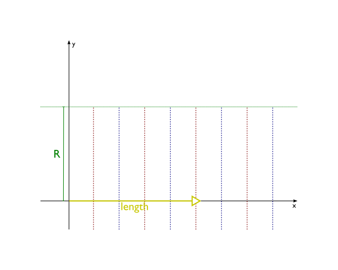
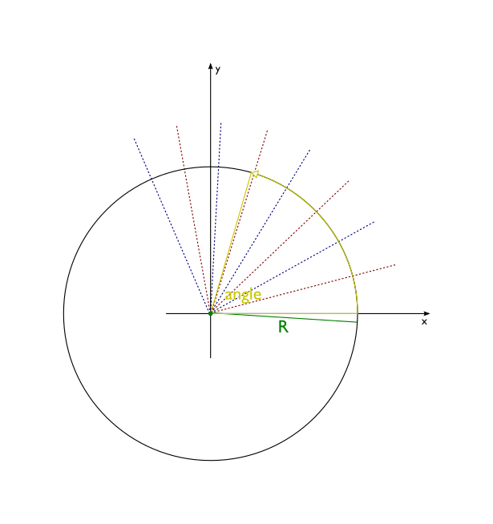

Molecule¶
-
class
Molecule(filename=None, inputformat=None, positions=None, numbers=None, lattice=None, **other)[source]¶ A class representing the molecule object.
An instance of this class has the following attributes:
atoms– list ofAtomobjects that belong to the moleculebonds– list ofBondobjects between atoms listed inatomslattice– list of lattice vectors in case of periodic structuresproperties–Settingsinstance storing all other information about the molecule
Note
Each
Atominatomslist and eachBondinbondslist has a reference to the parent molecule. Moreover, each atom stores the list of bonds it’s a part of and each bond stores references to atoms it bonds. That creates a complex net of references between objects that are part of a molecule. Consistency of this data is crucial for proper functioning of many methods. Because of that it is advised not to modify contents ofatomsandbondsby hand. When you need to alter your molecule, methodsadd_atom(),delete_atom(),add_bond()anddelete_bond()can be used to ensure that all these references are updated properly.Creating a
Moleculeobject for your calculation can be done in several ways. You can start with an empty molecule and manually add all atoms (and bonds, if needed):mol = Molecule() mol.add_atom(Atom(atnum=1, coords=(0,0,0))) mol.add_atom(Atom(atnum=1, coords=(d,0,0)))
This approach can be useful for building small molecules, especially if you wish to parametrize some of atomic coordinates (like in Simple example), but in general it’s not very practical. If coordinates and atom numbers are available, instantiation can be done by passing a value to the positions, numbers and optionally the lattice arguments:
xyz = np.random.randn(10,3) # 10 atoms, 3 coordinates per atom numbers = 10*[6] # 10 carbon atoms. If left None, will initialize to dummy atoms lattice = [[1,2,3], [1,2,3]] # lattice should have a shape of {1,2,3}x3 mol = Molecule(positions=xyz, numbers=numbers, lattice=lattice)
Alternatively, one can import atomic coordinates from some external file:
mol = Molecule('xyz/Benzene.xyz')
The constructor of a
Moleculeobject accepts four arguments that can be used to supply this information from a file in your filesystem. filename should be a string with a path (absolute or relative) to such a file. inputformat describes the format of the file. Currently, the following formats are supported:xyz,mol,mol2andpdb. If inputformat isasethe file reader engine of the ASE.io module is used, enabling you to read all input formats supported by ASE interface. Seeread()for further details. If the inputformat argument is not supplied, PLAMS will try to deduce it by examining the extension of the provided file, so in most of cases it is not needed to use inputformat, if only the file has the proper extension. Some formats (xyzandpdb) allow to store more than one geometry of a particular molecule within a single file. See the respectiveread()function for details how to access them. All other keyword arguments will be passed to the appropriate read function for the selected or determined file format.If a
Moleculeis initialized from an external file, the path to this file (filename argument) is stored inproperties.source. The base name of the file (filename without the extension) is kept inproperties.name.It is also possible to write a molecule to a file in one of the formats mentioned above or using the ASE.io engine. See
write()for details.The
latticeattribute is used to store information about lattice vectors in case of periodic structures. Some job types will automatically use that data while constructing input files.latticeshould be a list of up to 3 vectors (for different types of periodicity: chain, slab or bulk), each of which needs to be a list or a tuple of 3 numbers.Lattice vectors can be directly read from and written to
xyzfiles using the following convention (please mind the fact that this is an unofficial extension to the XYZ format):3 H 0.000000 0.765440 -0.008360 O 0.000000 0.000000 0.593720 H 0.000000 -0.765440 -0.008360 VEC1 3.000000 0.000000 0.000000 VEC2 0.000000 3.000000 0.000000 VEC3 0.000000 0.000000 3.000000For 1D (2D) periodicity please supply only
VEC1(VEC1andVEC2). Writing lattice vectors toxyzfiles can be disabled by simply reseting thelatticeattribute:mol.lattice = []
The detailed description of all available methods is presented below. Many of these methods require arguments that are atoms belonging to the current molecule. It can by done by using a reference to an
Atomobject present it theatomslist, but not by passing a number of an atom (its position withinatomslist). Unlike some other tools, PLAMS does not use integer numbers as primary identifiers of atoms. It is done to prevent problems when atoms within a molecule are reordered or some atoms are deleted. References toAtomorBondobjects can be obtained directly fromatomsorbondslists, or with dictionary-like bracket notation:>>> mol = Molecule('xyz/Ammonia.xyz') >>> mol.guess_bonds() >>> print(mol) Atoms: 1 H 0.942179 0.000000 -0.017370 2 H -0.471089 0.815951 -0.017370 3 N 0.000000 0.000000 0.383210 4 H -0.471089 -0.815951 -0.017370 Bonds: (1)--1.0--(3) (2)--1.0--(3) (3)--1.0--(4) >>> at = mol[1] >>> print(at) H 0.942179 0.000000 -0.017370 >>> b = mol[(1,3)] >>> print(b) ( H 0.942179 0.000000 -0.017370 )--1.0--( N 0.000000 0.000000 0.383210 ) >>> b = mol[(1,4)] >>> print(b) None
Note
For the purpose of
mol[i]notation, the numbering of atoms within a molecule starts with 1. Negative integers can be used to access atoms enumerated in the reversed order (mol[-1]for the last atom etc.)However, if you feel more familiar with identifying atoms by natural numbers, you can use
set_atoms_id()to equip each atom of the molecule withidattribute equal to atom’s position withinatomslist. This method can also be helpful to track changes in your molecule during tasks that can reorder atoms.-
__init__(filename=None, inputformat=None, positions=None, numbers=None, lattice=None, **other)[source]¶ Initialize self. See help(type(self)) for accurate signature.
-
copy(atoms=None)[source]¶ Return a copy of the molecule. The copy has atoms, bonds and all other components distinct from the original molecule (it is so called “deep copy”).
By default the entire molecule is copied. It is also possible to copy only some part of the molecule, indicated by atoms argument. It should be a list of atoms that belong to the molecule. If used, only these atoms, together with any bonds between them, are copied and included in the returned molecule.
-
add_molecule(other, copy=False)[source]¶ Add some other molecule to this one:
protein += water
If copy is
True, other molecule is copied and the copy is added to this molecule. Otherwise, other molecule is directly merged with this one Thepropertiesof this molecule aresoft_updatedwith thepropertiesof the other molecules.
-
add_atom(atom, adjacent=None)[source]¶ Add a new atom to the molecule.
atom should be an
Atominstance that does not belong to any molecule. Bonds between the new atom and other atoms of the molecule can be automatically added based on adjacent argument. It should be a list describing atoms of the molecule that the new atom is connected to. Each element of adjacent list can either be a pair(Atom, order)to indicate new bond’s order (useBond.ARfor aromatic bonds) or anAtominstance (a single bond is created in this case).Example:
mol = Molecule() #create an empty molecule h1 = Atom(symbol='H', coords=(1.0, 0.0, 0.0)) h2 = Atom(symbol='H', coords=(-1.0, 0.0, 0.0)) o = Atom(symbol='O', coords=(0.0, 1.0, 0.0)) mol.add_atom(h1) mol.add_atom(h2) mol.add_atom(o) mol.add_atom(Atom(symbol='C', coords=(0.0, 0.0, 0.0)), adjacent=[h1, h2, (o,2)])
-
delete_atom(atom)[source]¶ Delete an atom from the molecule.
atom should be an
Atominstance that belongs to the molecule. All bonds containing this atom are removed too.Examples:
#delete all hydrogens mol = Molecule('protein.pdb') hydrogens = [atom for atom in mol if atom.atnum == 1] for i in hydrogens: mol.delete_atom(i)
#delete first two atoms mol = Molecule('geom.xyz') mol.delete_atom(mol[1]) mol.delete_atom(mol[1]) #since the second atom of original molecule is now the first
-
add_bond(arg1, arg2=None, order=1)[source]¶ Add a new bond to the molecule.
This method can be used in two different ways. You can call it with just one argument being a
Bondinstance (other arguments are then ignored):>>> b = Bond(mol[2], mol[4], order=Bond.AR) #create aromatic bond between 2nd and 4th atom >>> mol.add_bond(b)
The other way is to pass two atoms (and possibly bond order) and new
Bondobject will be created automatically:>>> mol.add_bond(mol[2], mol[4], order=Bond.AR)
In both cases both atoms that are bonded have to belong to the molecule, otherwise an exception is raised.
-
delete_bond(arg1, arg2=None)[source]¶ Delete a bond from the molecule.
Just like
add_bond(), this method accepts either a single argument that is aBondinstance, or two arguments being instances ofAtom. In both cases objects used as arguments have to belong to the molecule.
-
find_bond(atom1, atom2)[source]¶ Find and return a bond between atom1 and atom2. Both atoms have to belong to the molecule. If no bond between chosen atoms exists, the retured value is
None.
-
set_atoms_id(start=1)[source]¶ Equip each atom of the molecule with the
idattribute equal to its position withinatomslist.The starting value of the numbering can be set with start (starts at 1 by default).
-
neighbors(atom)[source]¶ Return a list of neighbors of atom within the molecule.
atom has to belong to the molecule. Returned list follows the same order as the
bondsattribute of atom.
-
bond_matrix()[source]¶ Return a square numpy array with bond orders. The size of the array is equal to the number of atoms.
-
separate()[source]¶ Separate the molecule into connected components.
Returned is a list of new
Moleculeobjects (all atoms and bonds are disjoint with the original molecule). Each element of this list is identical to one connected component of the base molecule. A connected component is a subset of atoms such that there exists a path (along one or more bonds) between any two atoms. Usually these connected components are molecules.Example:
>>> mol = Molecule('xyz_dimers/NH3-H2O.xyz') >>> mol.guess_bonds() >>> print(mol) Atoms: 1 N -1.395591 -0.021564 0.000037 2 H -1.629811 0.961096 -0.106224 3 H -1.862767 -0.512544 -0.755974 4 H -1.833547 -0.330770 0.862307 5 O 1.568501 0.105892 0.000005 6 H 0.606736 -0.033962 -0.000628 7 H 1.940519 -0.780005 0.000222 Bonds: (5)--1.0--(7) (5)--1.0--(6) (1)--1.0--(3) (1)--1.0--(4) (1)--1.0--(2) >>> x = mol.separate() >>> for i in x: print(i) Atoms: 1 N -1.395591 -0.021564 0.000037 2 H -1.629811 0.961096 -0.106224 3 H -1.862767 -0.512544 -0.755974 4 H -1.833547 -0.330770 0.862307 Bonds: (1)--1.0--(3) (1)--1.0--(4) (1)--1.0--(2) Atoms: 1 O 1.568501 0.105892 0.000005 2 H 0.606736 -0.033962 -0.000628 3 H 1.940519 -0.780005 0.000222 Bonds: (1)--1.0--(3) (1)--1.0--(2)
-
guess_bonds(atom_subset=None, dmax=1.28)[source]¶ Try to guess bonds in the molecule based on types and positions of atoms.
All previously existing bonds are removed. New bonds are generated based on interatomic distances and information about maximal number of bonds for each atom type (
connectorsproperty, taken fromPeriodicTable).The problem of finding molecular bonds for a given set of atoms in space does not have a general solution, especially considering the fact the chemical bond in itself is not a precisely defined concept. For every method, no matter how sophisticated, there will always be corner cases for which the method produces disputable results. Moreover, depending on the context (area of application) the desired solution for a particular geometry may vary. Please do not treat this method as an oracle always providing a proper solution. The algorithm used here gives very good results for geometries that are not very far from the optimal geometry, especially consisting of lighter atoms. All kinds of organic molecules, including aromatic ones, usually work very well. Problematic results can emerge for transition metal complexes, transition states, incomplete molecules etc.
The algorithm used scales as n log n where n is the number of atoms.
The atom_subset argument can be used to limit the bond guessing to a subset of atoms, it should be an iterable container with atoms belonging to this molecule.
The dmax argument gives the maximum value for ratio of the bond length to the sum of atomic radii for the two atoms in the bond.
The bond order for any bond to a metal atom will be set to 1.
Warning
This method works reliably only for geometries representing complete molecules. If some atoms are missing (for example, a protein without hydrogens) the resulting set of bonds would usually contain more bonds or bonds with higher order than expected.
-
in_ring(arg)[source]¶ Check if an atom or a bond belonging to this
Moleculeforms a ring. arg should be an instance ofAtomorBondbelonging to thisMolecule.
-
supercell(*args)[source]¶ Return a new
Moleculeinstance representing a supercell build by replicating thisMoleculealong its lattice vectors.One should provide in input an integer matrix \(T_{i,j}\) representing the supercell transformation (\(\vec{a}_i' = \sum_j T_{i,j}\vec{a}_j\)). The size of the matrix should match the number of lattice vectors, i.e. 3x3 for 3D periodic systems, 2x2 for 2D periodic systems and one number for 1D periodic systems. The matrix can be provided in input as either a nested list or as a numpy matrix.
For a diagonal supercell expansion (i.e. \(T_{i \neq j}=0\)) one can provide in input n positive integers instead of a matrix, where n is number of lattice vectors in the molecule. e.g. This
mol.supercell([[2,0],[0,2]])is equivalent tomol.supercell(2,2).The returned
Moleculeis fully distinct from the current one, in a sense that it contains a different set ofAtomandBondinstances. However, each atom of the returnedMoleculecarries an additional information about its origin within the supercell. Ifatomis anAtominstance in the supercell,atom.properties.supercell.originpoints to theAtominstance of the original molecule that was copied to createatom, whileatom.properties.supercell.indexstores the tuple (with length equal to the number of lattice vectors) with cell index. For example,atom.properties.supercell.index == (2,1,0)means thatatomis a copy ofatom.properties.supercell.originthat was translated twice along the first lattice vector, once along the second vector, and not translated along the third vector.Example usage:
>>> graphene = Molecule('graphene.xyz') >>> print(graphene) Atoms: 1 C 0.000000 0.000000 0.000000 2 C 1.230000 0.710000 0.000000 Lattice: 2.4600000000 0.0000000000 0.0000000000 1.2300000000 2.1304224933 0.0000000000 >>> graphene_supercell = graphene.supercell(2,2) # diagonal supercell expansion >>> print(graphene_supercell) Atoms: 1 C 0.000000 0.000000 0.000000 2 C 1.230000 0.710000 0.000000 3 C 1.230000 2.130422 0.000000 4 C 2.460000 2.840422 0.000000 5 C 2.460000 0.000000 0.000000 6 C 3.690000 0.710000 0.000000 7 C 3.690000 2.130422 0.000000 8 C 4.920000 2.840422 0.000000 Lattice: 4.9200000000 0.0000000000 0.0000000000 2.4600000000 4.2608449866 0.0000000000 >>> diamond = Molecule('diamond.xyz') >>> print(diamond) Atoms: 1 C -0.446100 -0.446200 -0.446300 2 C 0.446400 0.446500 0.446600 Lattice: 0.0000000000 1.7850000000 1.7850000000 1.7850000000 0.0000000000 1.7850000000 1.7850000000 1.7850000000 0.0000000000 >>> diamond_supercell = diamond.supercell([[-1,1,1],[1,-1,1],[1,1,-1]]) >>> print(diamond_supercell) Atoms: 1 C -0.446100 -0.446200 -0.446300 2 C 0.446400 0.446500 0.446600 3 C 1.338900 1.338800 -0.446300 4 C 2.231400 2.231500 0.446600 5 C 1.338900 -0.446200 1.338700 6 C 2.231400 0.446500 2.231600 7 C -0.446100 1.338800 1.338700 8 C 0.446400 2.231500 2.231600 Lattice: 3.5700000000 0.0000000000 0.0000000000 0.0000000000 3.5700000000 0.0000000000 0.0000000000 0.0000000000 3.5700000000
-
unit_cell_volume(unit='angstrom')[source]¶ Return the volume of the unit cell of a 3D system.
unit is the unit of length, the cube of which will be used as the unit of volume.
-
cell_lengths(unit='angstrom')[source]¶ Return the lengths of the lattice vector. Returns a list with the same length as self.lattice
-
cell_angles(unit='degree')[source]¶ Return the angles between lattice vectors.
- unit : str
- output unit
For 2D systems, returns a list [gamma]
For 3D systems, returns a list [alpha, beta, gamma]
-
set_integer_bonds(action='warn', tolerance=0.0001)[source]¶ Convert non-integer bond orders into integers.
For example, bond orders of aromatic systems are no longer set to the non-integer value of
1.5, instead adopting bond orders of1and2.The implemented function walks a set of graphs constructed from all non-integer bonds, converting the orders of aforementioned bonds to integers by alternating calls to
math.ceil()andmath.floor(). The implication herein is that both \(i\) and \(i+1\) are considered valid (integer) values for any bond order within the \((i, i+1)\) interval. Floats which can be represented exactly as an integer, e.g. \(1.0\), are herein treated as integers.Can be used for sanitizaing any Molecules passed to the
rdkitmodule, as its functions are generally unable to handle Molecules with non-integer bond orders.By default this function will issue a warning if the total (summed) bond orders before and after are not equal to each other within a given tolerance. Accepted values are for action are
"ignore","warn"and"raise", which respectivelly ignore such cases, issue a warning or raise aMoleculeError.>>> from scm.plams import Molecule >>> benzene = Molecule(...) >>> print(benzene) Atoms: 1 C 1.193860 -0.689276 0.000000 2 C 1.193860 0.689276 0.000000 3 C 0.000000 1.378551 0.000000 4 C -1.193860 0.689276 0.000000 5 C -1.193860 -0.689276 0.000000 6 C -0.000000 -1.378551 0.000000 7 H 2.132911 -1.231437 -0.000000 8 H 2.132911 1.231437 -0.000000 9 H 0.000000 2.462874 -0.000000 10 H -2.132911 1.231437 -0.000000 11 H -2.132911 -1.231437 -0.000000 12 H -0.000000 -2.462874 -0.000000 Bonds: (3)--1.5--(4) (5)--1.5--(6) (1)--1.5--(6) (2)--1.5--(3) (4)--1.5--(5) (1)--1.5--(2) (3)--1.0--(9) (6)--1.0--(12) (5)--1.0--(11) (4)--1.0--(10) (2)--1.0--(8) (1)--1.0--(7) >>> benzene.set_integer_bonds() >>> print(benzene) Atoms: 1 C 1.193860 -0.689276 0.000000 2 C 1.193860 0.689276 0.000000 3 C 0.000000 1.378551 0.000000 4 C -1.193860 0.689276 0.000000 5 C -1.193860 -0.689276 0.000000 6 C -0.000000 -1.378551 0.000000 7 H 2.132911 -1.231437 -0.000000 8 H 2.132911 1.231437 -0.000000 9 H 0.000000 2.462874 -0.000000 10 H -2.132911 1.231437 -0.000000 11 H -2.132911 -1.231437 -0.000000 12 H -0.000000 -2.462874 -0.000000 Bonds: (3)--1.0--(4) (5)--1.0--(6) (1)--2.0--(6) (2)--2.0--(3) (4)--2.0--(5) (1)--1.0--(2) (3)--1.0--(9) (6)--1.0--(12) (5)--1.0--(11) (4)--1.0--(10) (2)--1.0--(8) (1)--1.0--(7)
-
index(value, start=1, stop=None)[source]¶ Return the first index of the specified Atom or Bond.
Providing an
Atomwill return its 1-based index, while aBondreturns a 2-tuple with the 1-based indices of its atoms.Raises a
MoleculeErrorif the provided is not an Atom/Bond or if the Atom/bond is not part of the molecule.>>> from scm.plams import Molecule, Bond, Atom >>> mol = Molecule(...) >>> atom: Atom = Molecule[1] >>> bond: Bond = Molecule[1, 2] >>> print(mol.index(atom)) 1 >>> print(mol.index(bond)) (1, 2)
-
round_coords(decimals=0, inplace=True)[source]¶ Round the Cartesian coordinates of this instance to decimals.
By default, with
inplace=True, the coordinates of this instance are updated inplace. Ifinplace=Falsethen a new copy of this Molecule is returned with its coordinates rounded.>>> from scm.plams import Molecule >>> mol = Molecule(...) Atoms: 1 H 1.234567 0.000000 0.000000 2 H 0.000000 0.000000 0.000000 >>> mol_rounded = round_coords(mol) >>> print(mol_rounded) Atoms: 1 H 1.000000 0.000000 0.000000 2 H 0.000000 0.000000 0.000000 >>> mol.round_coords(decimals=3) >>> print(mol) Atoms: 1 H 1.234000 0.000000 0.000000 2 H 0.000000 0.000000 0.000000
-
get_molecule_indices()[source]¶ Use the bond information to identify submolecules
Returns a list of lists of indices (e.g. for two methane molecules: [[0,1,2,3,4],[5,6,7,8,9]])
-
translate(vector, unit='angstrom')[source]¶ Move the molecule in space by vector, expressed in unit.
vector should be an iterable container of length 3 (usually tuple, list or numpy array). unit describes unit of values stored in vector.
-
rotate_lattice(matrix)[source]¶ Rotate only lattice vectors of the molecule with given rotation matrix.
matrix should be a container with 9 numerical values. It can be a list (tuple, numpy array etc.) listing matrix elements row-wise, either flat (
[1,2,3,4,5,6,7,8,9]) or in two-level fashion ([[1,2,3],[4,5,6],[7,8,9]]).Note
This method does not check if matrix is a proper rotation matrix.
-
rotate(matrix, lattice=False)[source]¶ Rotate the molecule with given rotation matrix. If lattice is
True, rotate lattice vectors too.matrix should be a container with 9 numerical values. It can be a list (tuple, numpy array etc.) listing matrix elements row-wise, either flat (
[1,2,3,4,5,6,7,8,9]) or in two-level fashion ([[1,2,3],[4,5,6],[7,8,9]]).Note
This method does not check if matrix is a proper rotation matrix.
-
align_lattice(convention='AMS', zero=1e-10)[source]¶ Rotate the molecule in such a way that lattice vectors are aligned with the coordinate system.
This method is meant to be used with periodic systems only. Using it on a
Moleculeinstance with an emptylatticeattribute has no effect.Possible values of the convention argument are:
AMS(default) – for 1D systems the lattice vector aligned with X axis. For 2D systems both lattice vectors aligned with XY plane. No constraints for 3D systemsreax(convention used by ReaxFF) – second lattice vector (if present) aligned with YZ plane. Third vector (if present) aligned with Z axis.
zero argument can be used to specify the numerical tolerance for zero (used to determine if some vector is already aligned with a particular axis or plane).
The returned boolean value indicates if any rotation happened.
-
rotate_bond(bond, moving_atom, angle, unit='radian')[source]¶ Rotate part of this molecule containing moving_atom along axis defined by bond by an angle expressed in unit.
bond should be chosen in such a way, that it divides the molecule into two parts (using a bond that forms a ring results in a
MoleculeError). moving_atom has to belong to bond and is used to pick which part of the molecule is rotated. A positive angle denotes counterclockwise rotation (when looking along the bond, from the stationary part of the molecule).
-
resize_bond(bond, moving_atom, length, unit='angstrom')[source]¶ Change the length of bond to length expressed in unit by moving part of the molecule containing moving_atom
bond should be chosen in such a way, that it divides the molecule into two parts (using a bond that forms a ring results in a
MoleculeError). moving_atom has to belong to bond and is used to pick which part of the molecule is moved.
-
closest_atom(point, unit='angstrom')[source]¶ Return the atom of the molecule that is the closest one to some point in space.
point should be an iterable container of length 3 (for example: tuple,
Atom, list, numpy array). unit describes unit of values stored in point.
-
distance_to_point(point, unit='angstrom', result_unit='angstrom')[source]¶ Calculate the distance between the molecule and some point in space (distance between point and
closest_atom()).point should be an iterable container of length 3 (for example: tuple,
Atom, list, numpy array). unit describes unit of values stored in point. Returned value is expressed in result_unit.
-
distance_to_mol(other, result_unit='angstrom', return_atoms=False)[source]¶ Calculate the distance between the molecule and some other molecule.
The distance is measured as the smallest distance between any atom of this molecule and any atom of other molecule. Returned distance is expressed in result_unit.
If return_atoms is
False, only a single number is returned. If return_atoms isTrue, the method returns a tuple(distance, atom1, atom2)whereatom1andatom2are atoms fulfilling the minimal distance, with atom1 belonging to this molecule and atom2 to other.
-
wrap(self, length, angle=2*pi, length_unit='angstrom', angle_unit='radian')[source]¶ Transform the molecule wrapping its x-axis around z-axis. This method is useful for building nanotubes or molecular wedding rings.
Atomic coordinates are transformed in the following way:
- z coordinates remain untouched
- x axis gets wrapped around the circle centered in the origin of new coordinate system. Each segment of x axis of length length ends up as an arc of a circle subtended by an angle angle. The radius of this circle is R = length/angle.
- part of the plane between the x axis and the line y=R is transformed into the interior of the circle, with line y=R being squashed into a single point - the center of the circle.
- part of the plane above line y=R is dropped
- part of the plane below x axis is transformed into outside of the circle
- transformation is done in such a way that distances along y axis are preserved
Before:
After:

-
get_center_of_mass(unit='angstrom')[source]¶ Return the center of mass of the molecule (as a tuple). Returned coordinates are expressed in unit.
-
get_formula(as_dict=False)[source]¶ Calculate the molecular formula of the molecule according to the Hill system.
Here molecular formula is a dictionary with keys being atomic symbols. The value for each key is the number of atoms of that type. If as_dict is
True, that dictionary is returned. Otherwise, it is converted into a string:>>> mol = Molecule('Ubiquitin.xyz') >>> print(m.get_formula(True)) {'N': 105, 'C': 378, 'O': 118, 'S': 1, 'H': 629} >>> print(m.get_formula(False)) C378H629N105O118S1
-
apply_strain(strain, voigt_form=False)[source]¶ Apply a strain deformation to a periodic system (i.e. with a non-empty
latticeattribute). The atoms in the unit cell will be strained accordingly, keeping the fractional atomic coordinates constant.If
voigt_form=False, strain should be a container with n*n numerical values, where n is the number oflatticevectors. It can be a list (tuple, numpy array etc.) listing matrix elements row-wise, either flat (e.g.[e_xx, e_xy, e_xz, e_yx, e_yy, e_yz, e_zx, e_zy, e_zz]) or in two-level fashion (e.g.[[e_xx, e_xy, e_xz],[e_yx, e_yy, e_yz],[e_zx, e_zy, e_zz]]). Ifvoigt_form=True, strain should be passed in voigt form (for 3D periodic systems:[e_xx, e_yy, e_zz, gamma_yz, gamma_xz, gamma_xy]; for 2D periodic systems:[e_xx, e_yy, gamma_xy]; for 1D periodic systems:[e_xx]with e_xy = gamma_xy/2,…). Example usage:>>> graphene = Molecule('graphene.xyz') >>> print(graphene) Atoms: 1 C 0.000000 0.000000 0.000000 2 C 1.230000 0.710141 0.000000 Lattice: 2.4600000000 0.0000000000 0.0000000000 1.2300000000 2.1304224900 0.0000000000 >>> graphene.apply_strain([0.1,0.2,0.0], voigt_form=True)]) Atoms: 1 C 0.000000 0.000000 0.000000 2 C 1.353000 0.852169 0.000000 Lattice: 2.7060000000 0.0000000000 0.0000000000 1.3530000000 2.5565069880 0.0000000000
-
map_to_central_cell(around_origin=True)[source]¶ Maps all atoms to the original cell. If around_origin=True the atoms will be mapped to the cell with fractional coordinates [-0.5,0.5], otherwise to the the cell in which all fractional coordinates are in the [0:1] interval.
-
perturb_atoms(max_displacement=0.01, unit='angstrom', atoms=None)[source]¶ Randomly perturb the coordinates of the atoms in the molecule.
Each Cartesian coordinate is displaced by a random value picked out of a uniform distribution in the interval [-max_displacement, +max_displacement] (converted to requested unit).
By default, all atoms are perturbed. It is also possible to perturb only part of the molecule, indicated by atoms argument. It should be a list of atoms belonging to the molecule.
-
perturb_lattice(max_displacement=0.01, unit='angstrom', ams_convention=True)[source]¶ Randomly perturb the lattice vectors.
The Cartesian components of the lattice vectors are changed by a random value picked out of a uniform distribution in the interval [-max_displacement, +max_displacement] (converted to requested unit).
If ams_convention=True then for 1D-periodic systems only the x-component of the lattice vector is perturbed, and for 2D-periodic systems only the xy-components of the lattice vectors are perturbed.
-
substitute(connector, ligand, ligand_connector, bond_length=None, steps=12, cost_func_mol=None, cost_func_array=None)[source]¶ Substitute a part of this molecule with ligand.
connector should be a pair of atoms that belong to this molecule and form a bond. The first atom of connector is the atom to which the ligand will be connected. The second atom of connector is removed from the molecule, together with all “further” atoms connected to it (that allows, for example, to substitute the whole functional group with another). Using connector that is a part or a ring triggers an exception.
ligand_connector is a connector analogue, but for ligand. IT describes the bond in the ligand that will be connected with the bond in this molecule descibed by connector.
If this molecule or ligand don’t have any bonds,
guess_bonds()is used.After removing all unneeded atoms, the ligand is translated to a new position, rotated, and connected by bond with the core molecule. The new
Bondis added between the first atom of connector and the first atom of ligand_connector. The length of that bond can be adjusted with bond_length argument, otherwise the default is the sum of atomic radii taken fromPeriodicTable.Then the ligand is rotated along newly created bond to find the optimal position. The full 360 degrees angle is divided into steps equidistant rotations and each such rotation is evaluated using a cost function. The orientation with the minimal cost is chosen.
The default cost function is:
\[\sum_{i \in mol, j\in lig} e^{-R_{ij}}\]A different cost function can be also supplied by the user, using one of the two remaining arguments: cost_func_mol or cost_func_array. cost_func_mol should be a function that takes two
Moleculeinstances: this molecule (after removing unneeded atoms) and ligand in a particular orientation (also without unneeded atoms) and returns a single number (the lower the number, the better the fit). cost_func_array is analogous, but instead ofMoleculeinstances it takes two numpy arrays (with dimensions: number of atoms x 3) with coordinates of this molecule and the ligand. If both are supplied, cost_func_mol takes precedence over cost_func_array.
-
str(decimal=6)[source]¶ Return a string representation of the molecule.
Information about atoms is printed in
xyzformat fashion – each atom in a separate, enumerated line. Then, if the molecule contains any bonds, they are printed. Each bond is printed in a separate line, with information about both atoms and bond order. Example:Atoms: 1 N 0.00000 0.00000 0.38321 2 H 0.94218 0.00000 -0.01737 3 H -0.47109 0.81595 -0.01737 4 H -0.47109 -0.81595 -0.01737 Bonds: (1)----1----(2) (1)----1----(3) (1)----1----(4)
-
__getitem__(key)[source]¶ The bracket notation can be used to access atoms or bonds directly.
If key is a single int (
mymol[i]), return i-th atom of the molecule. If key is a pair of ints (mymol[(i,j)]), return the bond between i-th and j-th atom (Noneif such a bond does not exist). Negative integers can be used to access atoms enumerated in the reversed order.This notation is read only: things like
mymol[3] = Atom(...)are forbidden.Numbering of atoms within a molecule starts with 1.
-
__add__(other)[source]¶ Create a new molecule that is a sum of this molecule and some other molecule:
newmol = mol1 + mol2
The new molecule has atoms, bonds and all other elements distinct from both components. The
propertiesofnewmolare a copy of thepropertiesofmol1soft_updatedwith thepropertiesofmol2.
-
__round__(ndigits=None)[source]¶ Magic method for rounding this instance’s Cartesian coordinates; called by the builtin
round()function.
-
__getstate__() → dict[source]¶ Returns the object which is to-be pickled by, e.g.,
pickle.dump(). AsMoleculeinstances are heavily nested objects, pickling them can raise aRecursionError. This issue is herein avoided relying on theMolecule.as_dict()method. See Pickling Class Instances for more details.
-
__setstate__(state: dict) → None[source]¶ Counterpart of
Molecule.__getstate__(); used for unpickling molecules.
-
as_dict()[source]¶ Store all information about the molecule in a dictionary.
The returned dictionary is, in principle, identical to
self.__dict__of the current instance, apart from the fact that allAtomandBondinstances inatomsandbondslists are replaced with dictionaries storing corresponing information.This method is a counterpart of
from_dict().
-
classmethod
from_dict(dictionary)[source]¶ Generate a new
Moleculeinstance based on the information stored in a dictionary.This method is a counterpart of
as_dict().
-
classmethod
from_elements(elements)[source]¶ Generate a new
Moleculeinstance based on a list of elements.By default it sets all coordinates to zero
-
as_array(atom_subset=None)[source]¶ Return cartesian coordinates of this molecule’s atoms as a numpy array.
atom_subset argument can be used to specify only a subset of atoms, it should be an iterable container with atoms belonging to this molecule.
Returned value is a n*3 numpy array where n is the number of atoms in the whole molecule, or in atom_subset, if used.
-
from_array(xyz_array, atom_subset=None)[source]¶ Update the cartesian coordinates of this
Molecule, containing n atoms, with coordinates provided by a (≤n)*3 numpy array xyz_array.atom_subset argument can be used to specify only a subset of atoms, it should be an iterable container with atoms belonging to this molecule. It should have the same length as the first dimenstion of xyz_array.
-
__array__(dtype=None)[source]¶ A magic method for constructing numpy arrays.
This method ensures that passing a
Moleculeinstance to numpy.array produces an array of Cartesian coordinates (seeMolecule.as_array()). The array data type can, optionally, be specified in dtype.
-
readxyz(f, geometry=1, **other)[source]¶ XYZ Reader:
The xyz format allows to store more than one geometry of a particular molecule within a single file. In such cases the geometry argument can be used to indicate which (in order of appearance in the file) geometry to import. Default is the first one (geometry = 1).
-
readpdb(f, geometry=1, **other)[source]¶ PDB Reader:
The pdb format allows to store more than one geometry of a particular molecule within a single file. In such cases the geometry argument can be used to indicate which (in order of appearance in the file) geometry to import. The default is the first one (geometry = 1).
-
static
_mol_from_rkf_section(sectiondict)[source]¶ Return a
Moleculeinstance constructed from the contents of the whole.rkffile section, supplied as a dictionary returned byKFFile.read_section.
-
writein(f, **other)[source]¶ Write the Molecule instance to a file as a System block from the AMS driver input files.
-
read(filename, inputformat=None, **other)[source]¶ Read molecular coordinates from a file.
filename should be a string with a path to a file. If inputformat is not
None, it should be one of supported formats or engines (keys occurring in the class attribute_readformat). Otherwise, the format is deduced from the file extension. For files without an extension the xyz format is used.All other options are passed to the chosen format reader.
-
write(filename, outputformat=None, mode='w', **other)[source]¶ Write molecular coordinates to a file.
filename should be a string with a path to a file. If outputformat is not
None, it should be one of supported formats or engines (keys occurring in the class attribute_writeformat). Otherwise, the format is deduced from the file extension. For files without an extension the xyz format is used.mode can be either ‘w’ (overwrites the file if the file exists) or ‘a’ (appends to the file if the file exists).
All other options are passed to the chosen format writer.
-
add_hatoms() → scm.plams.mol.molecule.Molecule[source]¶ Adds missing hydrogen atoms to the current molecule. Returns a new Molecule instance.
Example:
>>> o = Molecule() >>> o.add_atom(Atom(atnum=8)) >>> print(o) Atoms: 1 O 0.000000 0.000000 0.000000 >>> h2o = o.add_hatoms() >>> print(h2o) Atoms: 1 O 0.000000 0.000000 0.000000 2 H -0.109259 0.893161 0.334553 3 H 0.327778 0.033891 -0.901672
-
static
rmsd(mol1, mol2, return_rotmat=False, check=True)[source]¶ Uses the Kabsch algorithm to align and calculate the root-mean-square deviation of two systems’ atomic positions.
Assumes all elements and their order is the same in both systems, will check this if check == True.
Returns: - rmsd : float
- Root-mean-square-deviation of atomic coordinates
- rotmat : ndarray
- If return_rotmat is True, will additionally return the rotation matrix that aligns mol2 onto mol1.
-
assign_chirality()¶ Assigns stereo-info to PLAMS molecule by invoking RDKIT
-
find_permutation(other, level=1)¶ Reorder atoms in this molecule to match the order in some other molecule. The reordering is applied only if the perfect match is found. Returned value is the applied permutation (as a list of integers) or
None, if no reordering was performed. See alsofind_permutation().
-
get_chirality()¶ Returns the chirality of the atoms
-
label(level=1, keep_labels=False, flags=None)¶ Compute the label of this molecule using chosen level of detail.
Possible levels are:
- 0: does not pefrom any atom labeling, returns empirical formula (see
get_formula()) - 1: only direct connectivity is considered, without bond orders (in other words, treats all the bonds as single bonds)
- 2: use connectivity and bond orders
- 3: use connectivity, bond orders and some spatial information to distinguish R/S and E/Z isomers
- 4: use all above, plus more spatial information to distinguish different rotamers and different types of coordination complexes
If you need more precise control of what is taken into account while computing the label (or adjust the tolerance for geometrical operations) you can use the flags argument. It should be a dictionary of parameters recognized by
label_atoms(). Each of two letter boolean flags has to be present in flags. If you use flags, level is ignored.The level argument can also be a tuple of integers. In that case the labeling algorithm is run multiple times and the returned value is a tuple (with the same length as level) containing labels calculated with given levels of detail.
This function, by default, erases
IDnameattributes of all atoms at the end. You can change this behavior with keep_labels argument.If the molecule does not contain bonds,
guess_bonds()is used to determine them.Note
This method is a new PLAMS feature and its still somewhat experimental. The exact details of the algorithm can, and probably will, change in future. You are more than welcome to provide any feedback or feature requests.
- 0: does not pefrom any atom labeling, returns empirical formula (see
-
numbers¶ Return an array of all atomic numbers in the Molecule. Can also be used to set all numbers at once.
-
readase(f, **other)¶ Read Molecule using ASE engine
The
readfunction of theMoleculeclass passes a file descriptor into here, so in this case you must specify the format to be read by ASE:mol = Molecule('file.cif', inputformat='ase', format='cif')
The ASE Atoms object then gets converted to a PLAMS Molecule and returned. All other options are passed to
ASE.io.read(). See https://wiki.fysik.dtu.dk/ase/ase/io/io.html on how to use it.Note
The nomenclature of PLAMS and ASE is incompatible for reading multiple geometries, make sure that you only read single geometries with ASE! Reading multiple geometries is not supported, each geometry needs to be read individually.
-
set_local_labels(niter=2, flags=None)¶ Set atomic labels (IDnames) that are unique for local structures of a molecule
niter– The number of iterations in the atom labeling scheme
The idea of this method is that the number of iterations can be specified. If kept low (default niter), local structures over different molecules will have the same label.
-
writease(f, **other)¶ Write molecular coordinates using ASE engine.
The
writefunction of theMoleculeclass passes a file descriptor into here, so in this case you must specify the format to be written by ASE. All other options are passed toASE.io.write(). See https://wiki.fysik.dtu.dk/ase/ase/io/io.html on how to use it.These two write the same content to the respective files:
molecule.write('filename.anyextension', outputformat='ase', format='gen') molecule.writease('filename.anyextension', format='gen')
-
symbols¶ Return an array of all atomic symbols in the Molecule. Can also be used to set all symbols at once.
Atom labeling¶
This subsection describes API of identify module, which is used to assign unique names to atoms in a molecule.
Unique atom names are used in Molecule labeling (label()).
.. and in the method restoring the order of atoms (reorder()).
All the functions below, apart from label_atoms(), are for internal use and they are not visible in the main PLAMS namespace.
-
label_atoms(molecule, **kwargs)[source]¶ Label atoms in molecule.
Boolean keyword arguments:
- BO – include bond orders
- RS – include R/S stereoisomerism
- EZ – include E/Z stereoisomerism
- DH – include some dihedrals to detect alkane rotamers and syn-anti conformers in cycloalkanes
- CO – include more spatial info to detect different conformation of coordination complexes (flat square, octaedr etc.)
Numerical keyword arguments:
Diherdals considered with DH are all the dihedrals A-B-C-D such that A is a unique neighbor or B and D is a unique neighbor of C.
For atoms with 4 or more neighbors, the CO flag includes information about relative positions of equivalent/non-equivalent neighbors by checking if vectors from the central atom to the neighbors form 90 or 180 degrees angles.
-
molecule_name(molecule)[source]¶ Compute the label of the whole molecule based on
IDnameattributes of all the atoms.
-
initialize(molecule)[source]¶ Initialize atom labeling algorithm by setting
IDnameandIDdoneattributes for all atoms in molecule.
-
iterate(molecule, flags)[source]¶ Perform one iteration of atom labeling alogrithm.
First, mark all atoms that are unique and have only unique neighbors as “done”. Then calculate new label for each atom that is not done. Return True if the number of different atom labels increased during this iteration.
-
new_name(atom, flags)[source]¶ Compute new label for atom.
The new label is based on the existing label of atom, labels of all its neighbors and (possibly) some additional conformational information. The labels of neighbors are not obtained directly by reading neighbor’s
IDnamebut rather by a process called “knocking”. The atom knocks all its bonds. Each knocked bond returns an identifier describing the atom on the other end of the bond. The identifier is composed of knocked atom’sIDnametogether with some additional information desribing the character of the bond and knocked atom’s spatial environment. The exact behavior of this mechanism is adjusted by the contents of flags dictionary (seelabel_atoms()for details).
-
knock(A, bond, flags)[source]¶ Atom A knocks one of its bonds.
bond has to be a bond formed by atom A. The other end of this bond (atom S) returns its description, consisting of its
IDnameplus, possibly, some additional information. If BO flag is set, the description includes the bond order of bond. If EZ flag is set, the description includes additional bit of information whenever E/Z isomerism is possible. If DH flag is set, the description includes additional information for all dihedrals A-S-N-F such that A is a unique neighbor of S and F is a unique neighbor of N.
-
twist(v1, v2, v3, tolerance=None)[source]¶ Given 3 vectors in 3D space measure their “chirality” with tolerance.
Returns a pair. The first element is an integer number measuring the orientation (clockwise vs counterclockwise) of v1 and v3 while looking along v2. Values 1 and -1 indicate this case and the second element of returned pair is
None. Value 0 indicates that v1, v2, and v3 are coplanar, and the second element of the returned pair is indicating if two turns made by going v1->*v2*->*v3* are the same (left-left, right-right) or the opposite (left-right, right-left).